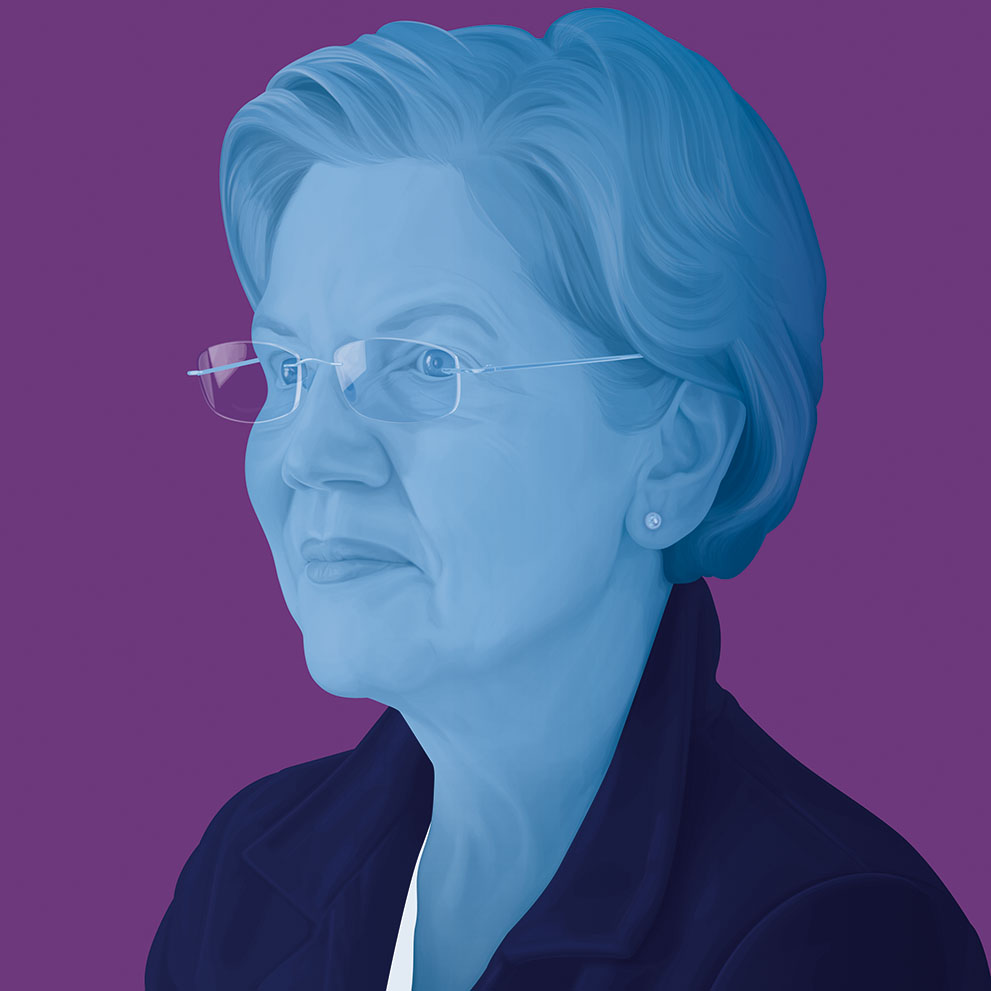

- Sanders’s $16.3 trillion proposal to make the Green New Deal a reality is the largest among the Democratic contenders.
- While other candidates are aiming to make the US economy carbon neutral by 2050, Sanders’s Green New Deal aims to decarbonize transportation and power generation, the two largest sources of emissions, by 2030.
- Sanders wants to end overseas financing of fossil fuel infrastructure through institutions like the Export-Import Bank.
- He also wants to use trade as a lever to drive international climate action. During the New Hampshire debate, Sanders said he voted against the USMCA trade agreement between the United States, Mexico, and Canada because it didn’t mention climate change at all.
- The sweeping energy and social transformation known as the “Green New Deal” is central to the Sanders campaign, and he has left more fingerprints on it than any of the other senators running for president who co-sponsored it. Rep. Alexandria Ocasio-Cortez (D-N.Y.), who propelled it into the center ring in Washington, got her electoral start working for Sanders in his 2016 campaign. And with its emphasis on social justice, working-class jobs, health care and spending without regard to revenue sources, it echoes the ideas of Sanders' long-time economic adviser, Stephanie Kelton.
- On Aug. 22, Sanders announced the most ambitious climate plan yet among the candidates. It promises to declare climate change a national emergency and put the Green New Deal into action by investing $16.3 trillion in a 10-year mobilization "that factors climate change into virtually every area of policy." That dollar figure is far higher than what other candidates are proposing.
- Having built his last campaign on small individual donations, Sanders was the first presidential candidate to sign the No Fossil Fuel Funding pledge launched by climate and justice groups in 2016.
- To pay for the Green Deal, Sanders says he would eliminate fossil fuel subsidies, cut back military spending related to oil, increase penalties for power plant emissions, and "massively" raise taxes on fossil fuel income and wealth, among other steps. His plan doesn't specifically mention a carbon tax, though Sanders has long advocated an aggressive carbon tax, and one was included in the Democratic Party platform in 2016 at his campaign's behest. He also relies on expected new tax income from the jobs created and a drop in social safety net costs if more people are working and mentions "making the wealthy and large corporations pay their fair share."

- Steyer's campaign published an extensive “Justice-Centered” climate plan that includes a commitment to declare climate change a national emergency and support for Green New Deal legislation. The plan aims for 100 percent clean electricity by 2040 and net-zero greenhouse gas emissions by 2045 across all sectors, including homes and buildings.
- Steyer says he would build a community-based network to inform his policies and a "Civilian Climate Corps" that would be funded with $250 billion in bonds over a decade and create 1 million jobs.
- His plan would commit $50 billion to wages and benefits to help fossil fuel workers to "thrive in a cleaner, more inclusive economy."
- Without mentioning a carbon tax, Steyer says he would eliminate "all forms of government giveaways" to fossil fuel companies, "including unlimited and unpriced global warming pollution."
- Steyer says he would commit $2 trillion over a decade to make infrastructure more climate-friendly and resilient, which he anticipates would mobilize an additional $4 trillion from non-federal sources. Half of the total would be focused on cleaner energy, industry and buildings, including modernizing the power grid and reducing methane emissions. About $775 billion would go into cleaning up transportation, including expanding electric vehicle charging infrastructure, "electrifying every school bus in the country" and improving public transit.
- His plan also aims to make communities and the military's infrastructure more resilient to climate change, while supporting efforts to improve disaster planning and response.

- Warren sought to pick up the baton of climate leadership from Washington Gov. Jay Inslee after he ended his climate-focused run for president. She met privately with him and then adopted his aggressive multi-part action proposal. She has challenged all of the presidential candidates to make the same commitment to 100% clean energy, buildings and transportation. Warren's plan calls for all new buildings to be zero-emissions by 2028, all electricity to be carbon-neutral by 2030, and all new passenger cars, trucks and buses to be zero emissions by 2030.
- Warren struck early with a pledge in April to prohibit all new fossil fuel leases on public lands. She had co-sponsored legislation on the same theme, but it never moved in the Republican Senate. Some, but not all, other candidates quickly echoed the promise.
- Warren's opening climate gambit was a $2 trillion package of investment in green research, manufacturing and exporting, all to help "achieve the ambitious targets of the Green New Deal" over the next 10 years. She then raised that to $3 trillion, matching Inslee's commitment, and explained exactly where the funds would come from: reversing the Trump tax cuts of 2017.
- Her plan would include $1.5 trillion for American-made clean energy products, $400 billion in funding for green research and development and $100 billion in foreign assistance to purchase emissions-free American energy technology. In her plan for environmental justice, Warren said she would direct one-third of her proposed climate investments or "at least $1 trillion" to vulnerable communities most impacted by climate change.
- Warren's agriculture plan aims to incentivize farmers to invest in sustainable farming practices that reduce carbon emissions. It calls for expanding the voluntary Conservation Stewardship Program, which compensates farmers for implementing more sustainable practices, from $1 billion to $15 billion annually. Her platform also takes aim at breaking up the mega-mergers of agricultural corporations.
- Her “Blue New Deal” plan for the oceans would fast-track permitting for offshore wind energy while phasing out offshore drilling for oil and gas. Warren's plan calls for electrification of ports to reduce local air pollution and greenhouse gas emissions. It also includes a "blue carbon" program that would support natural, ocean-based carbon sequestration projects including those involving coral reefs, mangroves, seagrass beds and wetlands.

- Buttigieg released a climate plan in September in which he vowed to implement "a bold and achievable Green New Deal" and laid out an ambitious pathway to net zero emissions economy-wide by 2050 that focuses on expanding clean energy jobs and making the United States the world's clean tech leader.
- By 2035, he envisions a zero-emissions electricity system and all new passenger vehicles being zero emissions, with help from electric vehicle tax credits of up to $10,000 per vehicle. By 2040, he sees requiring net zero emissions for all new heavy-duty vehicles, buses, trains, ships and aircraft, and having "a thriving carbon removal industry."
- His plan to create 3 million new jobs includes a 10-year, $200 billion commitment to retrain workers displaced in the transition away from fossil fuels. He also has a plan to create a Climate Corps service program focused on helping communities build resilience and sustainability.
- Buttigieg calls for "quadrupling federal research and development funding" for renewable energy and energy storage, investing $200 billion over 10 years, and spending $550 billion on deploying clean energy technologies.
- He also envisions a bigger U.S. international leadership role on both climate change and the global clean energy transition, in part by developing a $250 billion "Global Investment Initiative" that would boost projects in developing countries that use U.S. technology. Buttigieg says he would recommit the U.S. to the Paris climate agreement and revitalize U.S. climate leadership in the Arctic Council "so we can reduce emissions and oppose drilling in that region." A former U.S. Naval Reserve officer, Buttigieg wants to increase the military's climate planning and create a senior climate security position in the Defense Department.
- To nudge industries and consumers toward low-emissions choices, Buttigieg proposes an economy-wide carbon price with a dividend that would be sent to households to help offset higher costs. He also proposes a border adjustment tax on any imports not already subject to a carbon price in their home country. He wants to launch a $250 billion national green bank to funnel financing for clean energy projects into disadvantaged communities "where private capital is reluctant to go," particularly in middle America.
- He also spells out the climate roles American farmers could play. "There are some estimates that through better soil management, soil could capture a level of carbon equivalent to the entire global transportation industry," Buttigieg told a young questioner at an MSNBC town hall in June.
- Buttigieg has said he would ban all new fossil fuel development on federal lands. He wrote: "I favor a ban on new fracking and a rapid end to existing fracking so that we can build a 100 percent clean energy society as soon as possible." He signed the No Fossil Fuel Money Pledge in March
- Biden embraced the Green New Deal as a "crucial framework."
- Biden foresees $1.7 trillion in spending over the next 10 years, and $3.3 trillion in investments by the private sector and state and local governments.
- He wants Congress to pass emissions limits with "an enforcement mechanism ... based on the principles that polluters must bear the full cost of the carbon pollution they are emitting." He said it would include "clear, legally-binding emissions reductions," but did not give details.
- In July, Biden released a policy agenda that aims to boost the rural economy, in part by expanding a program that will pay farmers to use farming techniques that store carbon in the soil.
- His plan also calls for support for economically impacted communities. He was slow to agree with activists' calls for him to swear off campaign contributions from fossil fuel interests, but did sign the No Fossil Fuel Funding pledge on June 27.